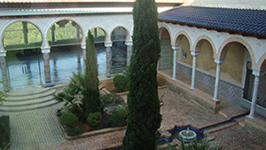

Paseando por la villa de Anna apreciamos la huella musulmana en sus estrechas callejuelas, así como la devoción cristiana en las imágenes de santos que aparecen en las fachadas de las casas. Construcciones árabes de época medieval que conviven con edificios religiosos, arquitecturas rústicas y arqueología industrial ligada a los cursos de agua, que hacen de Anna un variado paisaje arquitectónico.
Entre callejuelas de diseño islámico se levanta en el casco antiguo de la población el edificio más antiguo de la villa de Anna, su Castillo-Palacio de los Condes de Cervellón. Catalogado como Bien de Interés Cultural (BIC), se ha rehabilitado en los últimos años para convertirlo en un Centro de Interpretación Patrimonial, en el que se reflejen las distintas etapas históricas de la Villa de Anna a través de sus diversos espacios museísticos. Se encuentra en la Plaza de la Alameda, en pleno casco antiguo. Se puede realizar una visita guiada que comenzará por el sótano, donde se ubican el Museo del Agua, el Etnológico y futuro Museo Arqueológico. La Edad Media coincide con el periodo de dominación islámica, de manera que el edificio nos sumerge en la rica decoración musulmana del Patio y Sala Arabes a base de mármoles, yeserías, cerámicas y artesonados de gran belleza, bajo el sonido permanente del agua. Los años de dominación cristiana tienen sus propios espacios temáticos. La Sala Borja habla de los acontecimientos históricos de los siglos XV y XVI, cuando la Villa de Anna pasó de ser Baronía a Condado. La Sala Cervellón con una decoración barroca nos sitúa en los siglos XVII y XVIII. Finalmente la Sala de Anna nos acercará a los artistas locales que tuvo el municipio en los siglos XIX y XX, en el campo de la pintura, la música, la poesía, escultura, ventriloquía,...